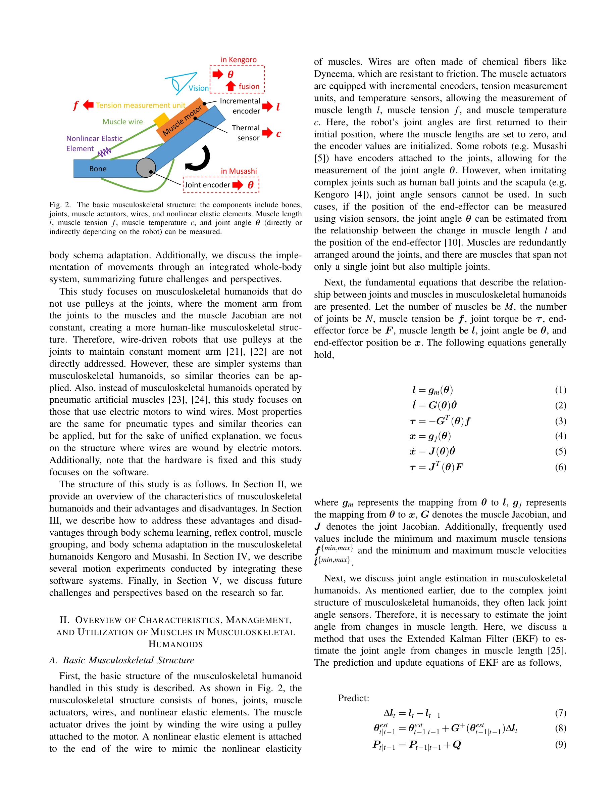
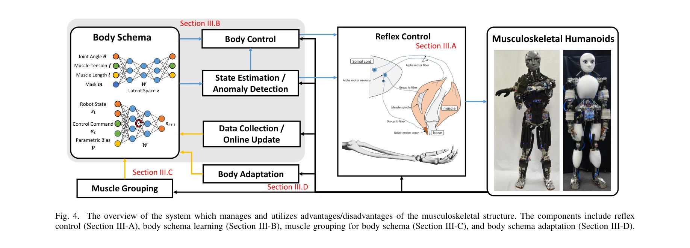

저자: Kento Kawaharazuka, Kei Okada, Masayuki Inaba | 날짜: 2026-02-09 | URL: https://arxiv.org/abs/2602.08518

Fig. 2. The basic musculoskeletal structure: the components include bones,
본 논문은 Kengoro와 Musashi 근골격 휴머노이드 로봇의 근육 특성을 5가지 속성(Redundancy, Independency, Anisotropy, Variable Moment Arm, Nonlinear Elasticity)으로 분류하고, 이를 효과적으로 관리·활용하는 방법론을 제시한다.

Fig. 4. The overview of the system which manages and utilizes advantages/disadvantages of the musculoskeletal structure.
Fig. 4. The overview of the system which manages and utilizes advantages/disadvantages of the musculoskeletal structure.
총평: 본 논문은 근골격 휴머노이드의 근육 특성을 처음으로 체계적으로 분류하고 관리·활용 방법을 제시한 중요한 기여이며, 실제 로봇 구현 사례를 바탕으로 높은 실용성을 갖추고 있다. 다만 정량적 성능 평가 및 일반화 가능성에 대한 보완이 필요하다.